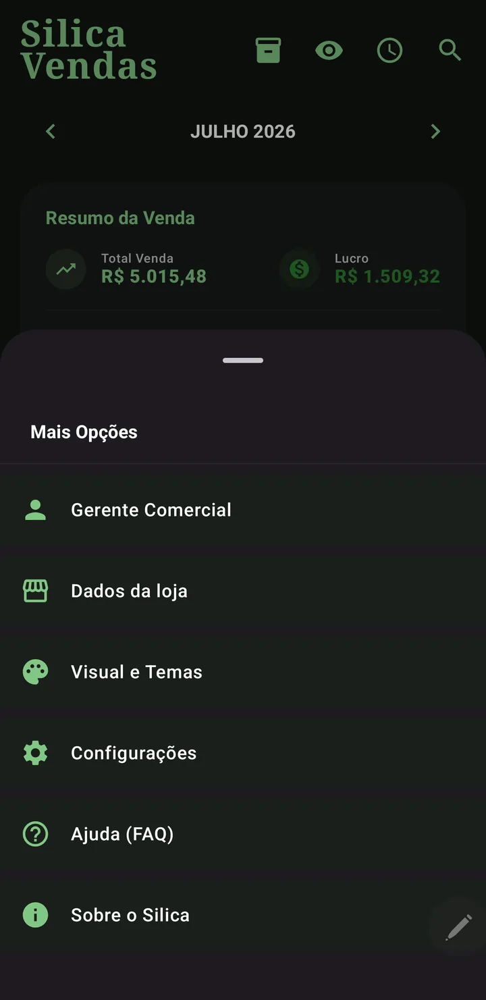
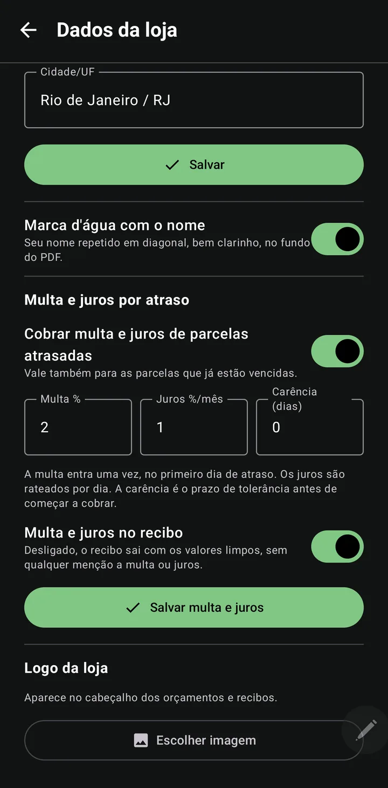
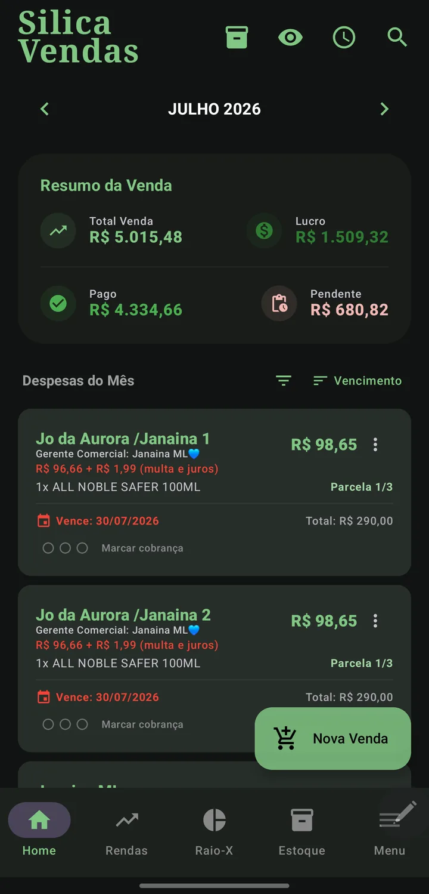

Do estoque ao lucro, no automático
From stock to profit, automatically
O perfil Vendas é uma gestão de revenda completa: controla estoque, registra vendas parceladas, calcula o lucro sozinho e ainda gera relatório de comissões.
The Sales profile is complete resale management: it tracks stock, records installment sales, computes profit on its own and generates a commission report.
Estoque
Stock
Na aba de Estoque você cadastra produtos com custo e quantidade. Use a busca por nome e o filtro "Somente sem estoque" para achar produtos rápido. Ao vender, o estoque diminui sozinho; se você excluir a venda inteira, os itens voltam ao estoque automaticamente.
In the Stock tab you register products with cost and quantity. Use name search and the "Out of stock only" filter to find products fast. When you sell, stock decreases on its own; if you delete the whole sale, items return to stock automatically.
O topo mostra o valor total em estoque e cada produto sinaliza quando está com estoque baixo.
The top shows the total stock value and each product flags when it's running low.

Cadastrar uma venda
Register a sale
- Cliente e vendedorClient and sellerCom autocomplete de clientes e Gerentes já usados.With autocomplete for clients and Managers you've used.
- Itens do estoqueStock itemsO app valida que o estoque não fica negativo.The app checks stock never goes negative.
- Data, vencimento e parcelasDate, due date and installmentsDivididas por centavos (soma exata).Split by cents (exact total).
- ConfirmarConfirmA venda é gravada e o estoque é baixado.The sale is saved and stock is reduced.

Lucro que vira renda sozinho
Profit that becomes income by itself
Aqui você não cadastra rendas manualmente. Sempre que marca uma parcela de venda como paga, o Silica calcula o lucro líquido e registra na sua lista de Rendas, com cliente, produto e valor.
Here you do not add income manually. Whenever you mark a sale installment as paid, Silica computes the net profit and records it in your Income list, with client, product and amount.
- Produto custou R$ 60, vendido por R$ 100 em 2×.
- Product cost $60, sold for $100 in 2×.
- Ao receber cada parcela, o lucro proporcional entra como renda: ele só é "real" quando o dinheiro entra.
- As each installment is received, the proportional profit becomes income: it only counts when the money arrives.
Pagamento parcial
Partial payment
Cliente pagou só uma parte? Use Pagamento parcial. O app fecha a parcela com o valor que entrou e cria uma parcela nova com o que faltou, no vencimento que você escolher. Nada é somado nas outras parcelas.
Did the client pay only part of it? Use Partial payment. The app closes the installment with the amount received and creates a new installment for what is left, due on the date you pick. Nothing is added to the other installments.
- A data: precisa cair depois desta parcela e antes da próxima. Os dias fora disso ficam desabilitados no calendário, então não tem como errar.
- The date: it must fall after this installment and before the next one. Days outside that range are disabled in the calendar, so you cannot get it wrong.
- Pagou adiantado? A parcela passa a valer para o dia do pagamento. Pagou atrasado? O vencimento original continua lá, o atraso não é apagado.
- Paid early? The installment moves to the payment day. Paid late? The original due date stays, the delay is not erased.
- Errou o valor? Use Desfazer pagamento parcial no menu do card: a parcela volta ao valor combinado e a parcela do restante some.
- Wrong amount? Use Undo partial payment in the card menu: the installment goes back to its agreed amount and the remaining installment disappears.
Multa e juros de quem paga atrasado
Late fee and interest
Em Menu › Dados da loja você liga a cobrança e ajusta os percentuais. O padrão do varejo já vem preenchido: multa de 2% cobrada uma vez, no primeiro dia de atraso, e juros de 1% ao mês rateados por dia. Dá para dar alguns dias de carência antes de começar. Quem não ligar a função não vê nada mudar.
In Menu › Store details you turn charging on and set the percentages. Common retail defaults are prefilled: a 2% fee charged once, on the first day of delay, and 1% monthly interest prorated per day. You can allow a few grace days before it starts. If you never turn it on, nothing changes for you.
- Parcela de R$ 100,00 vencida em 30/07, paga em 15/08 (16 dias): multa R$ 2,00 + juros R$ 0,53 = R$ 102,53.
- A $100.00 installment due Jul 30, paid on Aug 15 (16 days): fee $2.00 + interest $0.53 = $102.53.
- O valor cresce sozinho: o card da parcela atrasada já mostra o total de hoje, e o app recalcula a cada dia que passa.
- The amount grows on its own: the overdue card already shows today's total, and the app recalculates every day.
- Você decide na hora de receber: ao marcar como paga, escolha a data em que o cliente pagou. Se foi depois do vencimento, o app pergunta se aplica a multa e os juros — mostrando o valor. Perdoar é um toque.
- You decide when the money arrives: when marking it paid, pick the date the client actually paid. If it was after the due date, the app asks whether to apply the fee and interest — showing the amount. Waiving it is one tap.
- No recibo, tudo ou nada: um switch decide se multa e juros aparecem. Desligado, o recibo sai com os valores limpos, sem qualquer menção a encargos.
- On the receipt, all or nothing: a switch decides whether fee and interest show up. When off, the receipt shows clean amounts, with no mention of charges.
- Separado do lucro do produto: nas Rendas o acréscimo entra numa linha própria, então você sabe quanto do mês veio de venda e quanto veio de atraso. A comissão do Gerente não incide sobre encargos.
- Separate from product profit: in Income the charge gets its own line, so you know how much of the month came from sales and how much from delays. Manager commission doesn't apply to charges.



Cobrança organizada e recibo de pagamento
Organized reminders and payment receipt
Cada parcela em aberto tem três bolinhas no card. Toque para acender uma a cada cobrança que fizer, e o app mostra há quantos dias foi o último contato. Assim você sabe, de relance, quem já ficou tempo demais sem responder. A contagem é por parcela e some quando ela é paga.
Every open installment has three dots on its card. Tap to light one up for each reminder you send, and the app shows how many days ago the last contact was. At a glance you know who has gone too long without replying. The count is per installment and disappears once it is paid.
O texto de cobrança do WhatsApp é seu: escreva do seu jeito e toque em "Salvar como padrão". O app guarda a sua mensagem e troca sozinho os dados de cada cliente (nome, produtos, parcela, valor, vencimento) nas próximas cobranças. Sem códigos para decorar: escreva com os dados que estão na tela e o Silica generaliza.
The WhatsApp reminder text is yours: write it your way and tap "Save as default". The app keeps your message and swaps in each client's data (name, products, installment, amount, due date) on future reminders. No codes to memorize: write using the data on screen and Silica generalizes it.
Quando você marca a última parcela como paga, o app já pergunta se quer gerar o recibo na hora (e ele continua disponível no menu do card). É um PDF com o logo e o nome da sua loja, os itens comprados, cada parcela com data e hora do pagamento, o total pago e um agradecimento. Você escolhe entre três formas de entregar: compartilhar o PDF, enviar como texto no WhatsApp ou salvar o PDF no celular. É um documento de controle entre você e o cliente, e não substitui nota fiscal.
When you mark the last installment as paid, the app asks right away whether to generate the receipt (and it stays available in the card menu). It is a PDF with your store logo and name, the items purchased, each installment with the date and time it was paid, the total paid and a thank-you note. You choose between three ways to deliver it: share the PDF, send it as text on WhatsApp or save the PDF to your phone. It is a control document between you and the client, and does not replace a tax invoice.
Comissões (Gerentes Comerciais)
Commissions (Sales Managers)
Em Menu › Gerente Comercial › aba Comissões, você define o percentual de cada Gerente e usa as setas ‹ › para ver o lucro de cada mês sem sair da tela. A comissão é calculada por parcela paga.
In Menu › Sales Manager › Commissions tab, you set each Manager's percentage and use the ‹ › arrows to see each month's profit without leaving the screen. Commission is computed per paid installment.


Relatório do Gerente (PDF)
Manager report (PDF)
No Raio-X do perfil Vendas, toque no ícone de PDF: escolha o Gerente, o período (um mês ou tudo) e o % de comissão. O relatório é um extrato de parcelas: cada parcela entra no mês do seu vencimento, separando a comissão realizada (parcelas pagas) da comissão a receber.
In the Sales X-Ray, tap the PDF icon: choose the Manager, the period (one month or all) and the commission %. The report is a per-installment statement: each installment lands in its due month, separating realized commission (paid) from commission to receive.
ROI & Conversão em Caixa
ROI & Cash Conversion
O Raio-X do Vendas traz métricas profissionais:
The Sales X-Ray adds professional metrics:
- ROI (Retorno sobre Investimento): quanto seu dinheiro rendeu sobre o custo do estoque.
- ROI (Return on Investment): how much your money earned over the stock cost.
- Conversão em Caixa: quanto do que você vendeu já entrou de fato no seu bolso.
- Cash Conversion: how much of what you sold has actually reached your pocket.